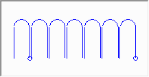

")
Formmatten-Verlegung mit Staffeldarstellung. ISBCAD führt Sie von der Auswahl einer Biegeform [WähFor] über die Mattenauswahl und -verteilung [Typ/ab] bis zur Definition des Verlegebereichs [BerDef] automatisch durch die benötigten Arbeitsschritte/Funktionen.
Weitere Funktionen können bedarfsweise über die Menüpalette aufgerufen werden.
Funktionen |
Beschreibung |
|---|---|
Biegeform wählen. |
|
Durchmesser und Abstand definieren. |
|
Bereich definieren. |
|
Mattentyp und -verteilung ändern. |
|
Verlegebereich ändern. |
|
Formmatten-Verlegung löschen. |
|
Verknüpfungen ändern. |
Optionen |
Beschreibung |
|---|---|
|
8: Aktuelle Positionsnummer. Q188-A: Aktueller Mattentyp. |
|
3: Anzahl der Bauteile. 0.03: Voreingestellte Betondeckung. Öffnet den Dialog Betondeckung nach EC2. |
 |
Vorschaufenster: |